Capyverse Logo Lab
Six logo directions (A–F) for Capyverse Odyssey, drawn as vector art (no AI): real font outlines re-set letter by letter, plus hand-drawn shapes for the capybara, popcorn, verified badge and planet. Every one is a clean SVG with no font dependency, tested on the #12 capsule and at Steam's smallest sizes.
What the Steam hits do
21 library logos from comparable games: Fall Guys, Stumble Guys, Party Animals, Goat Simulator, TABS, Human Fall Flat, Untitled Goose Game, Content Warning, Crab Champions, Risk of Rain 2, Hades, Brotato, Balatro, Roboquest, Gunfire Reborn and more.
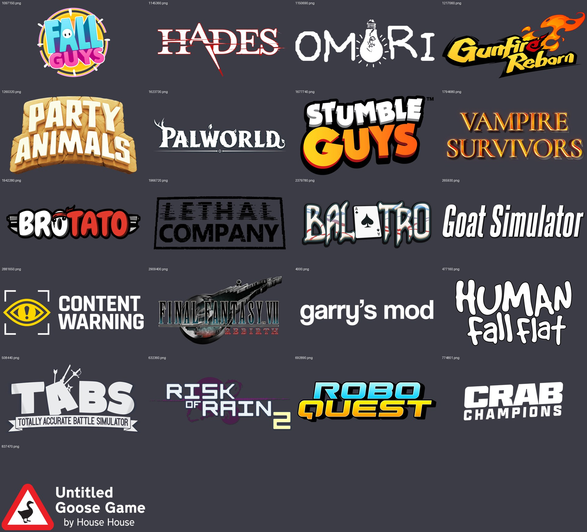
- One idea, not a sceneThe hits are type plus one twist: Brotato's bandana O, Balatro's playing card, Omori's light bulb, TABS' weapons. The current Capyverse logo is a whole illustrated sign (planks, gear, vines, compass).
- Flat beats renderedThe quirky-3D games (Fall Guys, Stumble Guys, Party Animals) use chunky rounded type with a thick outline and one shadow. Painted wood and metal texture turns to mush at 231 px.
- Short name, hugeCrab Champions, TABS and Brotato make the first word the logo and shrink the rest. "CAPYVERSE" should carry it; "ODYSSEY" is a tag.
- Personality in one letterMost swap a single glyph for a story object. Capyverse has three natural candidates: Cappy, popcorn, the viral video.
- An icon that stands aloneUntitled Goose Game and Content Warning ship a mark that works without words: favicon, Discord, small capsule.
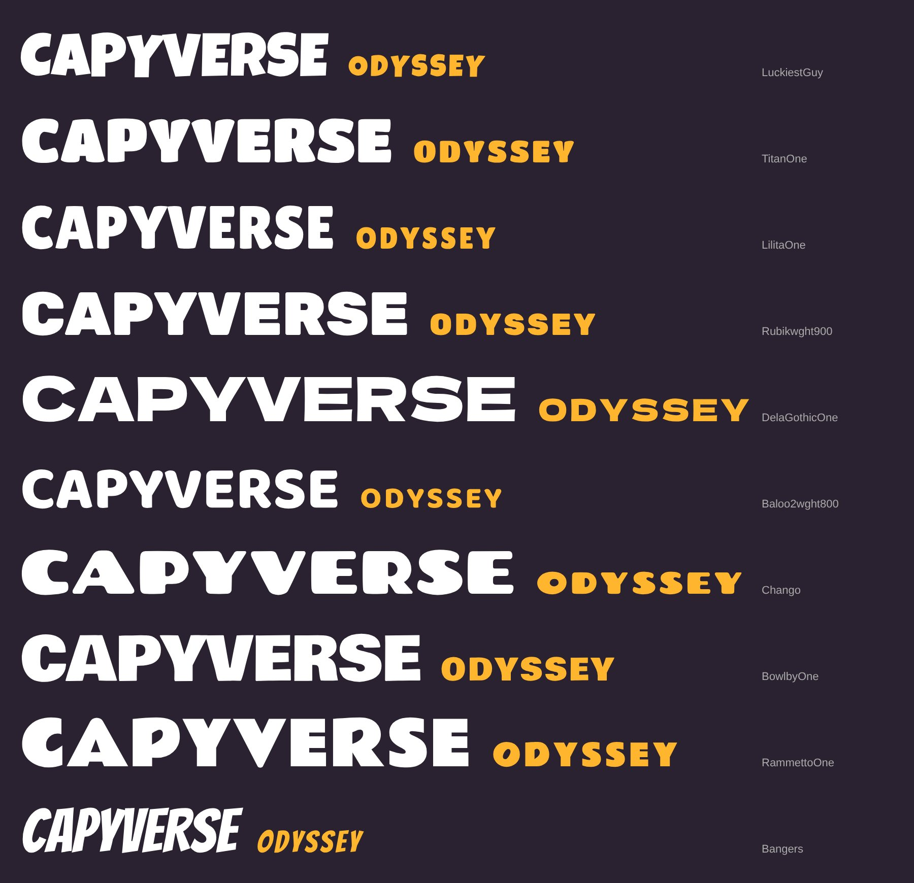
Popcorn Pop
Party-game sticker logo- Titan One letters, each re-set by hand on a bouncing baseline with its own tilt, so the word looks like it's mid-jetpack.
- The first C is Cappy's head: ear, eye, brow and nostril drawn onto the letter.
- The O of ODYSSEY is a popcorn kernel, sitting on a red-and-white popcorn-bucket band.
- Jetpack speed streaks behind the word; a cream sticker outline holds it together on any background.
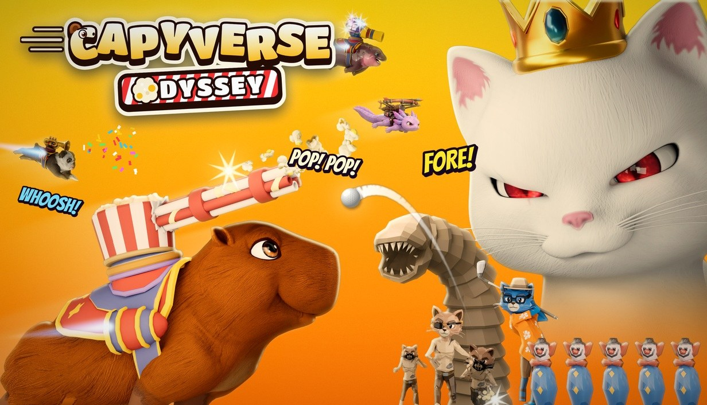
- Feels like
- Fall Guys, Stumble Guys. Warm, toy-like, instantly "family-friendly party game".
- Strength
- Most Cappy-forward of the three; the popcorn band ties straight to his weapon.
- Weakness
- The most detail, so it gets busy at 231 px. Party-game sticker logos are a crowded look on Steam.
Going Viral
The story in one mark- Rubik Black, sheared forward like a fast-scrolling feed, white with an ink outline and one hard hot-pink shadow.
- CAPYVERSE has a blue verified badge: the capybaras are the famous ones now, which is the whole plot.
- ODYSSEY is a red notification pill, and its O is a play button: the viral video.
- A heart reaction pops off the C, and the A's counter is tinted the same red.
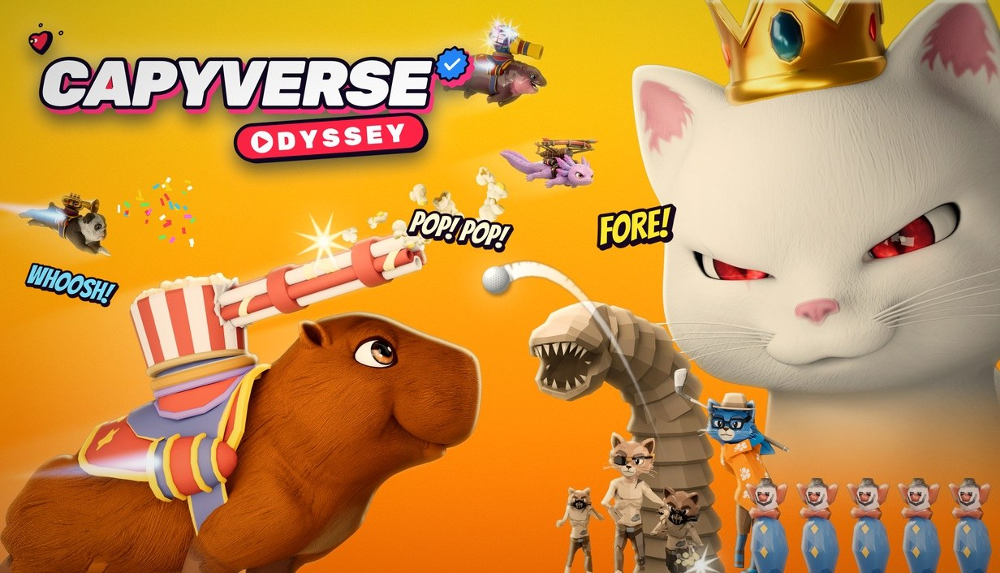
- Feels like
- Crab Champions' confidence plus internet culture: fast, loud, a little cheeky.
- Strength
- Tells the store pitch ("capybaras went viral, Ophelia took it personally") without a sentence. Flat colors, so it reads best at every size and on both backgrounds.
- Weakness
- No capybara in the mark itself; it leans on the art to show Cappy. Pair it with C's emblem as the icon.
Capy Planet, wordmark only
Chango, emblem removed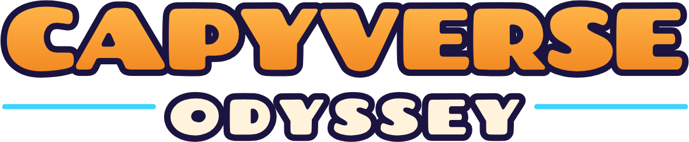
- The emblem is gone as asked; what's left is the wordmark: Chango, very wide and chunky, tightened by hand, in Cappy orange.
- Cream ODYSSEY between two jetpack-cyan rules.
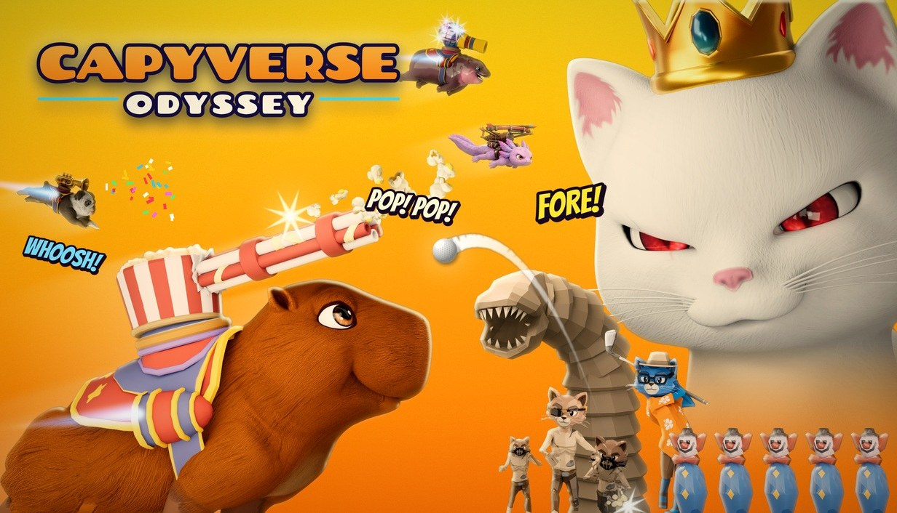
- Feels like
- A classic arcade title card: calm and confident.
- Strength
- The simplest of the set, and very clean on dark backgrounds.
- Weakness
- Without the emblem it has no twist, and the orange disappears on the orange brand background.
Toybox
Luckiest Guy, two rows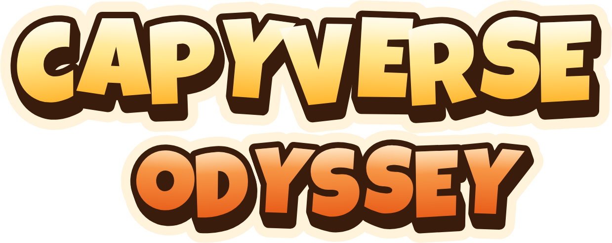
- Luckiest Guy, CAPYVERSE stacked on ODYSSEY; every letter bounced and tilted by hand.
- Cream-to-butter CAPYVERSE over an orange ODYSSEY, with a deep brown 3D extrusion and a popcorn-cream sticker outline.
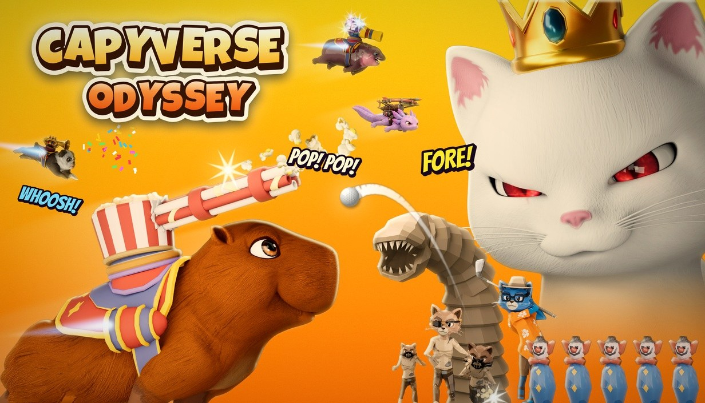
- Feels like
- Party Animals, a toy box label.
- Strength
- Friendly, warm and very readable as a block; both words get equal weight.
- Weakness
- ODYSSEY's orange sits close to the brand orange; it relies on the sticker outline for contrast.
Stumble
Inspired mainly by Stumble Guys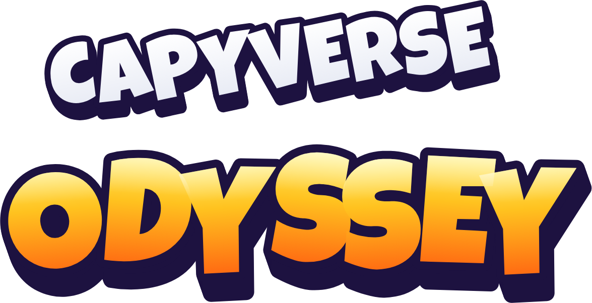
- Built on the Stumble Guys structure: a smaller white first word tilted up, then a huge second word in a yellow-to-orange gradient sitting on a thick navy 3D block.
- ODYSSEY's letters bounce and lean into each other; a white shine on the top third of each letter gives the toy-plastic look.
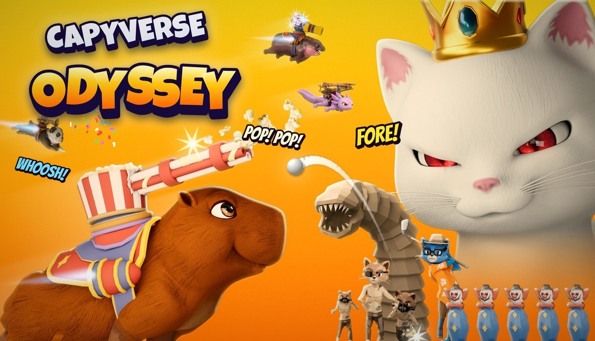
- Feels like
- Stumble Guys and Fall Guys: a chaotic multiplayer party game.
- Strength
- The navy block makes it pop on yellow, orange and dark backgrounds alike. Genre-recognizable at a glance.
- Weakness
- Because it borrows the Stumble Guys formula closely, it says "party game" more than "Capyverse"; the big word is ODYSSEY, not the name.
Marquee
Luckiest Guy, arched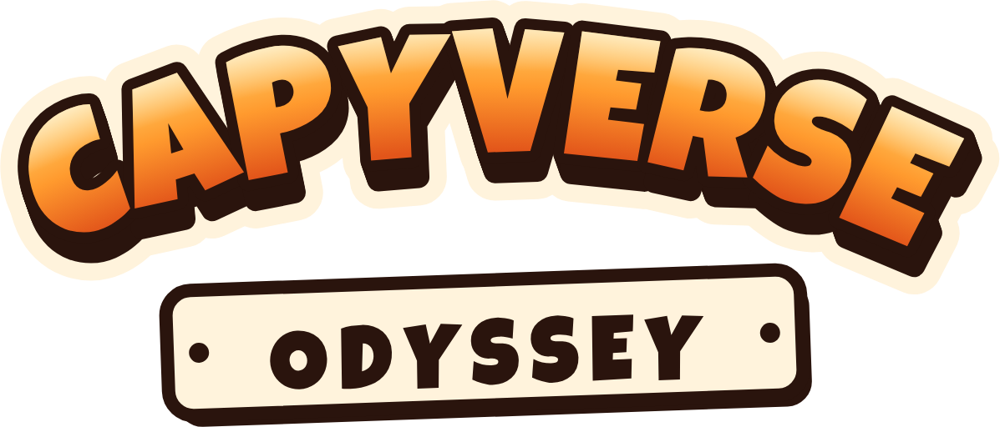
- CAPYVERSE arched like a carnival marquee (the carnival and bowling worlds), in Cappy orange with a brown extrusion.
- ODYSSEY in a riveted cream tag hanging below.
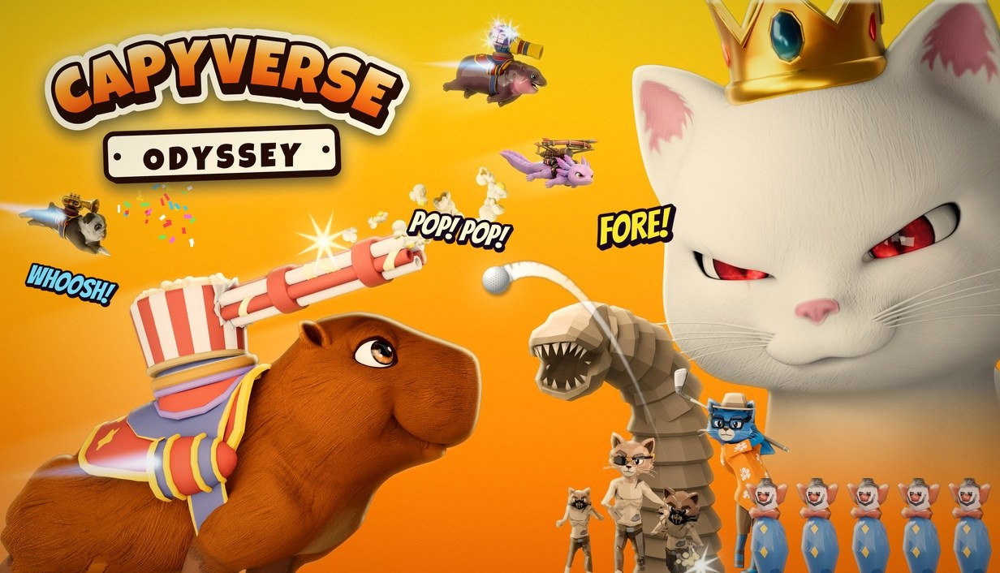
- Feels like
- A funfair sign, Crab Champions' arched confidence.
- Strength
- The arch gives a strong silhouette; the tag keeps ODYSSEY readable even small.
- Weakness
- Same orange-on-orange contrast issue as D on the brand background.
Size test
Rows: current logo, A, B, C. Columns: small capsule 462×174 on brand gradient and on Steam's dark UI, then the 231×87 list size.
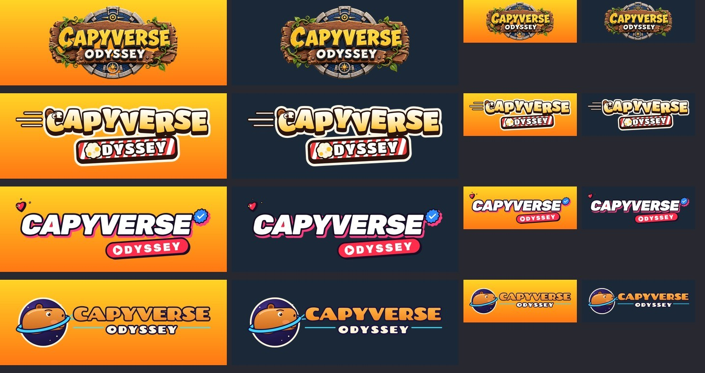
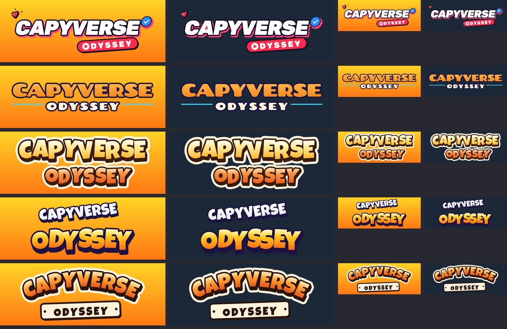
At 231 px, B and E stay fully legible on both backgrounds. D and F hold up thanks to their sticker outline. C loses contrast on orange. The current logo's planks, gear and vines turn into texture.
Recommendation: B as the logo, E as the runner-up
Use B "Going Viral" as the main logo. The game's hook isn't "fantasy adventure", which is what the wooden sign says. It's "the internet's favorite animals in a fast, absurd shooter". B says that in one look, works at every Steam size, and doesn't clash with the 3D renders, because it's flat and graphic like Crab Champions' type. E (Stumble) is the runner-up: it's just as readable and instantly says "party game", but it borrows the Stumble Guys formula closely and makes ODYSSEY the big word instead of the name. If you want E's energy, the next step is to merge them: B's verified badge and play-button O on E's two-row 3D build.
Look and feel: "loud internet pop"
Flat, chunky, sheared type with an ink outline and one hard hot-pink shadow. Social-UI objects as the graphic language: verified badges, play buttons, hearts, notification pills, view counts. Use them for UI, store banners and trailer titles (e.g. "1.2M CAPYS WATCHING", a verified check on each hero's name card). The 3D game stays as rendered; the graphics on top speak "feed".
#FFD426
Brand orange #FF7814
Ink #160F26
Shadow pink #FF3D7F
Notification red #FF2D4B
Verified blue #2E8BFF
Popcorn cream #FFF3DC
Type: Rubik Black Italic for headlines and the logo family, Nunito Sans for body text. Both are free (OFL) Google Fonts.
Files
Pure vector SVGs (letters converted to paths, no fonts needed). Open in Illustrator, Figma or a browser.
Side by side with the Steam hits
The same 21 logos from the research grid, with our recommended logo (B) dropped in at the same size, on the same background.
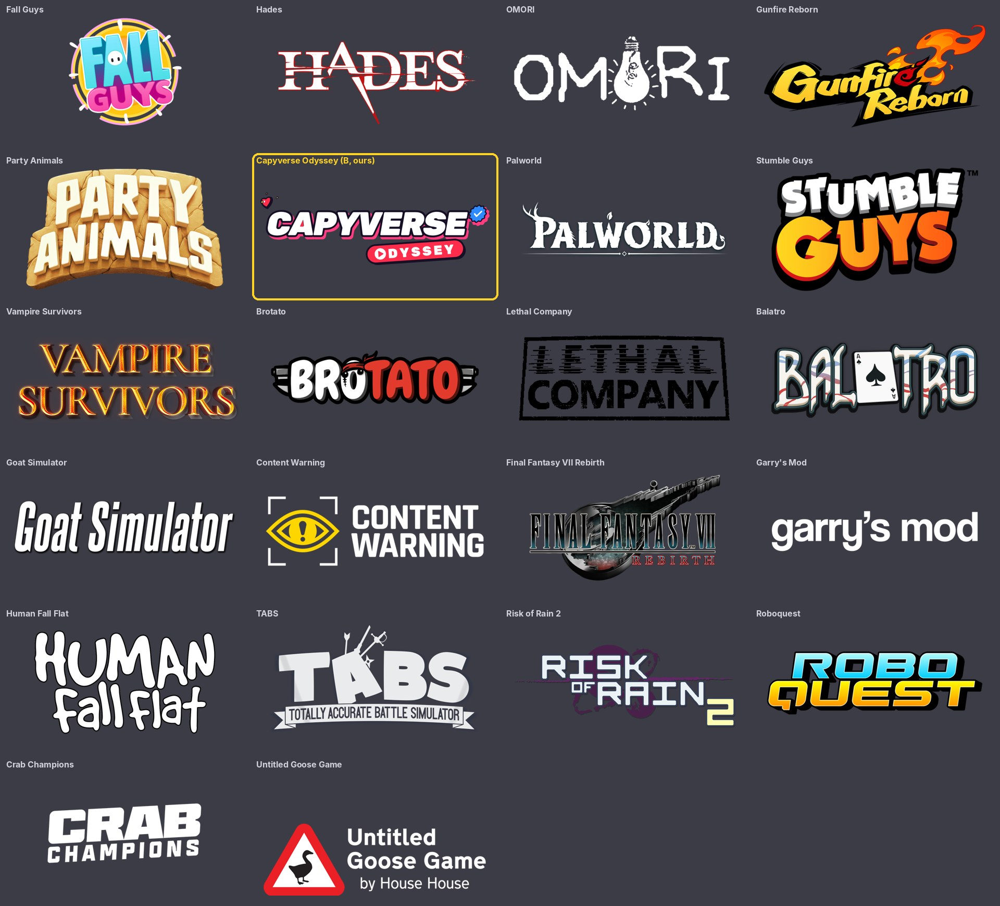